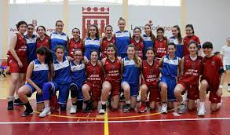
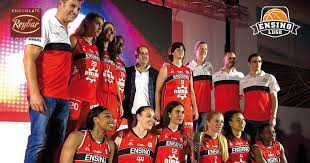

Gernika KESB
El Gernika Kirol Elkartea Saskibaloia nació de la unión de los dos equipos existentes en la villa foral. El Gernika Saski-Baloi , y, el I.B. Gernika en el año 1996 . A petición del Ayuntamiento, tuvieron un acercamiento entre las dos directivas con el fin de unificar los dos clubes. La unión tanto deportiva como a nivel de entrenadores, jugadores y directiva fue buena desde el principio por la buena compenetración y trabajo en equipo. Se reunieron dos representantes de cada Club para ver como se podía sacar éste proyecto para adelante. Por parte del Gernika S.B. Karmele y Moreno, y por parte del I.B. Gernika, Txema y Zubizarreta . En un principio se juntaron las dos directivas al completo. Los equipos con los que contaron en féminas fueron: un equipo en 1.ª división, dos juveniles de 1.ª categoría, dos cadetes de 1.ª y dos cadetes de 2.ª. Respecto al masculino: un equipo de 1.ª Regional y Junior de 1.ª Respecto a los entrenadores, Mario López entrenaría el masculino de 1.ª Regional y Kipu el femenino de 1.ª, ya que ambos contaban con el título de entrenador nacional.
El Gernika Saski-Baloi (GSB) , iniciaba su andadura en una competición oficial, al incluirse en la Segunda Regional de Bizkaia, en la temporada 1983-1984. Un grupo de aficionados a éste deporte iniciaba así la historia de un nuevo Club que venía a sumarse a otros distintos( fútbol, rugby etc.) que ya existían en Gernika. El comienzo fue duro, creyendo que sería un equipo marginado con los demás deportes del pueblo, pero la gente respondió de manera positiva. La intención de sacar un equipo, se venía gestando entre Iñaki Asteinza y Jon Mikel Roman (Kipu), por el año 1982. Después del I Torneo de Navidad de Baloncesto, que se organizó sin medios, sin ayudas y con muy poca colaboración, y viendo que había un grupo de futuros jugadores intersantes, se decidieron a dar los primeros pasos para formar el club. El grupo que se formó, tuvo como primer presidente a Juanjo Asteinza; a él le siguió José Ramon Moreno hasta la unificación. Teniendo como uno de los entrenadores a Juantxu Urberuaga, exjugador de la selección Española y del Águilas entre otros. Desde los inicios, se viene respetando el color granate en los distintos equipos del club.y ello se debe a que desde los orígenes de éste club, pensaron en darle dicho color para coincidir con el color del pendón de la villa de Gernika. Uno de los problemas que tuvieron, fue que tenían que compartir el frontón de Santanape no sólo para disputar los partidos oficiales, sino para los entrenamientos y demás actividades propias de un frontón.
Porta XI Ensino CB
El Porta XI Ensino, conocido por motivos de patrocinio como Durán Maquinaria Ensino, es un equipo de baloncesto profesional femenino de la ciudad de Lugo (Galicia). Fundada en 1980, actualmente compite en la Liga Femenina de Baloncesto (Liga Endesa), máxima categoría del baloncesto femenino español. Docente llegó por primera vez a Primera División en 1995, llegando a las semifinales en cuatro ocasiones por el título de liga y siendo dos veces subcampeón de la Copa de la Reina. También consiguieron dos títulos de Copa de Galicia. El Ensino juega sus partidos como sede en el Pazo dos Deportes, un recinto con capacidad para 6.000 espectadores.
Fundado en 1980 como CD Ensino, el club debutó en el tercer nivel del sistema de la liga española, llamado 2ª División Nacional, con la mayoría de jugadores provenientes de la escuela Compañía de María en Lugo. En su séptima temporada, el club terminó tercero y ascendió a la liga de segunda división, denominada 1ª División B. El club jugó en esta división durante siete de las ocho temporadas siguientes, con un descenso a la tercera división y un ascenso inmediato, hasta que 1995, cuando ascienden por primera vez a la liga de primera división, denominada Primera División, con Manel Sánchez como técnico. El club jugó durante 12 temporadas consecutivas en la primera división española, desde su ascenso en 1995 hasta su descenso en 2007, terminando tercero en tres temporadas (1999, 2000, 2004). Su mejor temporada regular fue en 1998-99, cuando terminaron primeros. Además llegó a la final de la Copa nacional en dos ocasiones (1999, 2002), con Juan Corral como técnico. Luego de once temporadas y cinco fallidos playoffs de ascenso, Ensino volvió a la Liga Femenina en 2018. Logró una racha de 19 triunfos consecutivos, incluidos los cuatro partidos de los playoffs de ascenso, en la tercera temporada de Juan Nécega como técnico en jefe.